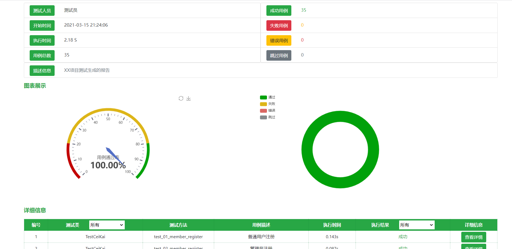

unittestteport中封装了一个TestRunner类，可以用来代替unittest中的TextTestRunner来执行测试用例，执行完测试用例之后会自动生成测试报告。并且有多种报告风格可选
1、使用案例
from unittestteport import TestRunner
# 加载用例到测试套件
suite = unittest.defaultTestLoader.discover('用例所在目录路径')
# 创建测试运行程序
runner = TestRunner(test_suite)
# 运行用例，生成测试报告
runner.run()
运行上述代码，就会自动生成一个report.html的报告文件
2、报告样式展示：

3、关于TestRunner初始化参数
在使用TestRunner创建测试运行程序时，可以通过以下参数来，自定义报告的相关内容
- suites: 测试套件（必传）
- filename: 指定报告文件名
- report_dir:指定存放报告路径
- title:指定测试报告的标题
- templates: 可以指定1，2，3三个风格的模板
- tester:测试人员名称
import unittestreport
# 1、加载测试用例到套件中
suite = unittest.defaultTestLoader.discover(r'C:\project\open_class\Py0507\testcase')
# 2、创建一个用例运行程序
runner = unittestreport.TestRunner(suite,
tester='测试人员—小柠檬',
filename="C:\project\",
report_dir=".",
title='这里设置报告标题',
desc='小柠檬项目测试生成的报告描述',
templates=2
)
# 3、运行测试用例
runner.run()
4、更多的报告样式
templates: 指定1，2，3三个风格的模板样式分别如下，
报告样式二：是基于BeautifulReport的报告优化而来

后续版本更新，还会持续开发其他的报告样式